Este libro lo he hecho especialmente para ti, con mucho cariño y pensando en cada detalle que sé que puede gustarte.
Desde el momento en que decidí regalarte algo, quise que fuera más que un simple obsequio;
quería que fuera una experiencia que pudieras disfrutar, descubrir y vivir a tu manera.
Para sacarle el máximo provecho, te pido que sigas estos pasos:
1- No te saltes ninguna página. Cada una tiene algo especial que descubrir, así que sigue el orden para no perderte nada.
Asegúrate de tener un cuaderno y un lápiz a la mano.
2- Algunas actividades te pedirán que anotes tus pensamientos o resuelvas ciertos retos.Tómate tu tiempo en cada página, no te apresures. La idea es que disfrutes el proceso.
3- Si encuentras alguna actividad que te resulte difícil, no dudes en investigar o pedir ayuda. ¡El aprendizaje es parte de la diversión!
4- Marca tus respuestas o notas en tu cuaderno.
Será útil tenerlas organizadas para el final.
5- Si te surge una idea o inspiración mientras lees,
¡anótala! Este libro está diseñado para que puedas reflexionar y pensar más allá de las páginas.
6- Cuando termines el libro, toma una foto de tus respuestas o escanea tus notas y envíamelas por WhatsApp.
Estoy deseando ver todo lo que has descubierto y cómo te ha ido en esta aventura.
7- Si te ha gustado, no dudes en contarme cuál fue tu parte favorita y qué te llevas de esta experiencia.
8- Espero que mientras leas y explores estas páginas, encuentres algo especial en cada una de ellas.
Este libro está diseñado para que te entretengas, pienses y, sobre todo, para que pases un buen rato.
Hay algunas partes interactivas que estoy seguro te sacarán una sonrisa
(¡y no me sorprendería si te desafían un poco también!).
Así que te invito a que te sumerjas en esta pequeña aventura,
a que lo completes sin prisas, pero disfrutando cada momento.
No te preocupes si alguna página te toma más tiempo, la idea es que te diviertas,
que aprendas algo nuevo, o simplemente que te desconectes por un rato
y te sientas libre de hacerlo a tu ritmo.
Al final, este libro es solo un reflejo de la estima
que te tengo,
y espero que lo sientas en cada palabra, en cada actividad y en cada página que explores.
No puedo esperar a ver cómo lo terminas
(¡si es que lo terminas! 😄),
y estoy seguro de que lo disfrutarás tanto como yo disfruté creándolo para ti.
Con mucho cariño,
Iván
¿Comenzamos?
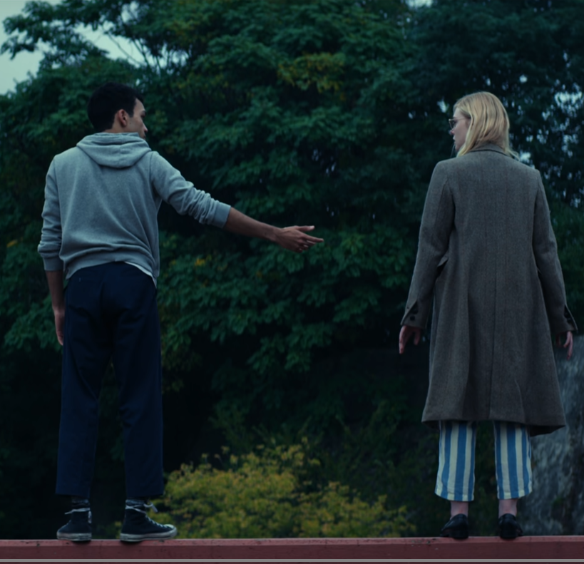
¿Por qué te quiero?
Te quiero por lo que eres,
por lo que ya viviste y sufriste.
Te quiero para tenerte cerca,
pero también para que seamos libres.
Te quiero como se quiere
una sola vez en la vida...
Con el alma
y sin ninguna duda.
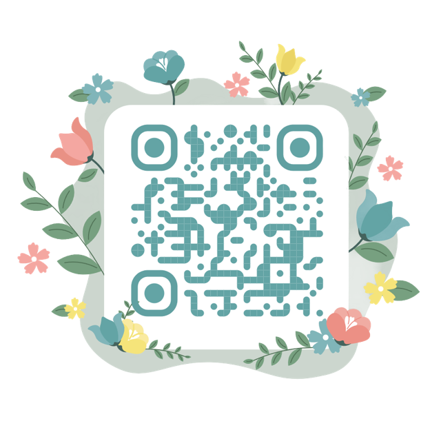
Tengo mil maneras para decirte
cuánto te quiero,
pero te lo resumo en estas páginas:
Te quiero en estas líneas
y en cada verso.
Así como también te quiero
en primavera, verano, otoño y en invierno.
Te quiero cuando te miro
y cuando estás lejos.
Te quiero en mis horas libres
y cuando te tengo a mi lado.
Te quiero en cada aventura,
en cada sueño, en cada paseo,
en cada ciudad
y en cada rincón del mundo.
Te quiero hoy, mañana y siempre.
Te quiero a cada minuto
y en cada latido por segundo.
Ese instante donde te descubrí
entre la multitud del mundo,
donde coincidió nuestra brújula
apuntando al norte.
Aquel segundo que no fue perfecto,
pero me bastó escuchar tus latidos
para descubrir
lo que en mis sueños solo veía.
Te reconocí como mi canción favorita.
Y fue desde entonces cuando por fin
logré tocar con mis dedos
lo que llaman felicidad...
Aquel día cuando te conocí.
Eres como la luna,
que iluminas cuando ando a oscuras,
que afectas a marea
y perturbas mi sueño.
Luz de la nada,
que provocas desvelos,
que todos te aman
y algunos te retratan.
Que eres fría,
pero calientas con fogatas,
que embriagas a los mortales
y te quedas al amanecer.
Luna, le das un mejor sabor a la vida,
a la música y al alcohol.
Luna, que tu sombra
es más bella que la del sol,
que reflejas sin daños
y te dejas admirar.
Luna, no sé cuánto tiempo te he amado,
pero aceleras mi corazón
cada que iluminas mi rostro.
El insomnio me habla tan bien de ti,
que está dispuesto a robarme los sueños.
Y en ocasiones te odio tan fuerte,
que no puedo ni pensar.
Pero en forma de fantasma,
aparece ella una vez más,
llega con su capa de súper héroe
a salvar la noche.
Y es jodido que pase tan recurrente,
pero no negare que es lo que más me gusta
de mi día.
Letras por doquier,
extraños pensamientos por todo el cuarto,
y una extraña y repetitiva visión del futuro.
Hay muchas cosas que no te digo,
lugares que no sabes que te dedico.
El sol,
los cielos despejados,
las nubes y sus figuras,
cuando la luna se asoma,
los campos de girasoles,
en fin...
A veces te dedico (todos) los atardeceres.
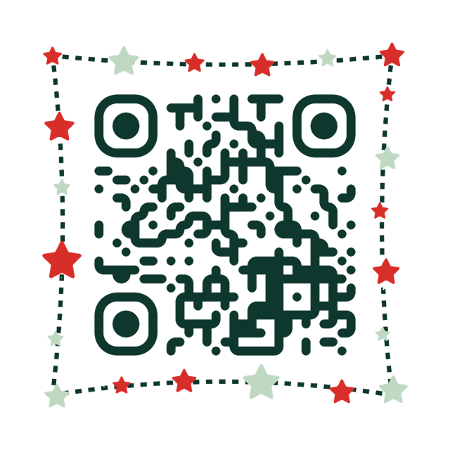
Romántico como la mierda,
no acción, de sentimiento.
Hablo de no sentir la cara,
sino sentir su mirada.
Como ave sintiendo el viento,
soy libre en tu cadera . . .
amo el mar, aunque me aterra
y beso tu mano cuando llegas.
Hace tiempo no beso tus labios,
pero aún siento tus besos.
Sin flores ni mariachi,
pero soy tu caballero,
con golpes y bofetadas,
pero eres mi cielo.
Romántico de sentimiento,
eso soy cuando amo la verdad.
Esa niña,
la que está a lo lejos,
la que se para de puntitas
para robarme un beso.
No sé qué carajos hizo,
pero se volvió mi universo.
Esa niña chaparrita
que solo miraba
desde la distancia.
Y ahora me ve
con esa mirada
que dice: recuérdame
cada que mires
constelaciones en el cielo.
Esa niña que tanto amo,
la que procura siempre
estar a mi lado,
la que se volvió mi
cielo nocturno.
Esa niña,
la que está a lo lejos,
la que me enamoró
en algún rincón
de la vida.
Te espero una vida,
dos o tres…
o las que quepan en la eternidad.
Te quiero cerquita,
que mi vida poco a poco se marchita
cuando no beso tu boquita.
Te espero en la playa,
observando las olas,
que me recuerdan a esos ojos estrella.
Te espero una vida,
dos o tres…
o las que quepan en la eternidad.
Ojalá te amen como cuando tenías 5 años,
y que siempre sueñes con la misma intensidad
que tienes a los diecinueve.
Que vueles
y que no vayas por la estrella más alta,
sino por la fugaz más rápida.
Ojalá te vuelva a besar el día de mañana,
que tu mano se entrelace con la mía
una vez más,
y que, por la noche,
vuelvas a acariciar mi cabello.
Ojalá tú nunca, pero ojalá tú siempre.
Que tu piel se vuelva a empapar
de agua en la lluvia,
que tu cabello se vuelva a llenar de arena.
Y que cada noche,
vuelvas a besar mis ojos.
Ojalá estés enamorada el resto de tu vida.
Y que, al ver a tu hijo,
llores como cuando eras pequeña.
Ojalá te caigas de la montaña más pequeña,
Que te ahogues en el océano más escaso,
Y que ardas en el infierno más helado posible.
Ojalá tú nunca, pero ojalá tú siempre.
Ahí, en la estrella más brillante,
ahí es donde debes estar,
donde más te quiero amar,
en la única pieza que encajas. . .
Porque eso eres,
brillante y dominante,
primera luz de la mañana
y último rayo por la noche.
Tú, que mueves el cabello
y despierto en enero,
cuando los días son como deben ser. . .
jodidamente melancólicos.
Nube contra luz,
que enamoras,
que encandilas,
que llamas a fotografiar.
Destello, que brillan tus ojos
y brilla mi alma.
No hay palabras para explicar
lo que causas en mí.
No hay sentimientos que describen
el tenerte cerca.
Porque cuando te acercas
me haces estremecer
y no recuerdo ni mi nombre.
Me basta con oler tu perfume
para saber que existe la perfección...
Y es cuando estás conmigo.
____________________________________________
____________________________________________
____________________________________________
____________________________________________
____________________________________________
____________________________________________
____________________________________________
____________________________________________
____________________________________________
____________________________________________
Tan tierna,
tan impaciente,
tan valiente,
tan dramatica,
delicada o atrevida
y aveces tan loca...
Mira que mereces que te quieran
en cada una de tus facetas
porque perfecta quiza no eres,
pero única serás siempre.
Solo quería que supieras
que nunca me importará
cuán lejos me alejes.
Porque cuando te dije
que me quedaría,
lo dije en serio.
Estás un poco perdida y dañada,
pero no estás sin esperanza.
Sé quién eres, amo quién eres,
y por eso me quedaré.
Así aprenderás a amarte
a ti mismo también.
Dejamos de hablar,
y la verdad es que fue doloroso
sentir que la persona con la que
solía hablar todos los días,
a quien esperaba mensajes
o me despertaba para encontrar uno,
ya no estaba en mi vida.
Hay momentos en los que quiero escribirte
porque siento que te extraño;
es como si te hubieras llevado
la otra parte de mí contigo.
Me encariñé mucho contigo y te aprecié,
quizás no pude mostrarlo en absoluto,
pero créeme, siempre tendrás
un lugar en mi corazón.
Espero que algún día podamos
hablar de nuevo como solíamos hacerlo,
despertar con un "buenos días"
tuyo, fue lo mejor
que me pasó.
Tal vez en otra vida,
nos encontremos de nuevo...
Besarte los labios, mirarte a la cara,
Recuerdo los besos que dabas, si me acariciabas.
No lo supe ver, si yo me fui ahora quiero volver.
Los meses pasaban como si de día se trataran,
No sé a qué esperabas, sé que te dañaba.
Y no lo supe ver, lo que me diste lo tengo a deber.
Buscábamos, imaginábamos,
Éramos trozos de amor.
Recuerdos flotan en mi mente, como hojas al viento,
y cada susurro tuyo aún resuena en mi corazón.
Quisiera volver a esos momentos, a esos días soleados,
donde nuestras risas llenaban el aire,
y nuestros sueños danzaban al ritmo de la esperanza.
Pero ahora solo quedan sombras y anhelos,
un eco lejano de lo que solíamos ser.
Tal vez algún día, el destino nos reúna,
y podamos reescribir nuestra historia de amor.
Quizá no tenemos las mismas metas
o los mismos sueños.
No escucho la música que a ti te gusta
ni veo las series
que te pegan por horas en Netflix.
Pero al mirar las estrellas
sé que tú y yo estamos destinados.
Y quizá no compartimos
los mismos gustos,
pero contigo quiero coincidir
en lo más importante...
En esta vida a tu lado.
La verdad es que alguna vez amé,
amé la forma en la que nuestras manos
encajaban perfectamente
y dábamos un paseo por algún parque.
Amé la forma en la que me solías mirar
en cada reencuentro que teníamos,
caminar por la playa.
Amé tu inocencia sin manchas por el tiempo,
amé tus risas, tus labios
y hasta tu voz.
Amé tu perspectiva en la sociedad,
tu forma de demostrarme que todo
me tiene que valer un carajo
si en verdad quiero encontrar la felicidad.
Amé tu pequeña sonrisa en ese destello de luz
que sucedió al llegar el otoño,
a forma en la que me mentía a mí,
joder, claro que lo amé.
Amé, pero claro, eso no me bastó.
Alguna vez amé,
lo único malo,
es que estaba acostumbrado
al corazón roto.
Sin saber, actué…
sin saber navegue y el daño que te cause,
me mata cada mes.
Tanto frío causé,
que incluso yo me hele.
Destruí tanto por nada,
pero algo en esto me mantiene cuerdo
porque jamás tome tu primer beso
y tampoco tu “te amo”.
Nevé sobre tu playa,
pero eso aún me hace daño. . .
me cole en tu canción,
pero eso aún me hace daño.
Y cuando escucho esa canción
tu rostro viene a mí.
Y el frío que causé,
me acompaña en mi libreta.
Tú,
y esa sonrisa que me vuelve a la vida.
Tú,
y ese sol en tu sonrisa.
El viento soplando en tu cabello.
Y, bajo tus pies,
la dulce brisa del mar
entrando en tus poros.
Tus dedos tocando los míos
y tus besos mostrándome el cielo,
a la par en que el sol se oculta de nosotros
por milésima vez.
Tú,
y tus abrazos de invierno,
tú,
y tus labios en mis ojos.
Eso es todo lo que necesito
Ella era fuego
buscando un vaso de agua,
un lago o algo
para frenar su caos.
De pronto un día,
conoció a él,
que no era exactamente agua,
pero controlaba la llama.
Exactamente no sé
como encajaban,
pero sus manos eran un
perfecto complemento.
Eran dos locos enamorados,
se amaban con locura,
y a él no le importaba
quemarse de vez en cuando.
Pero un día,
ella se apartó de él,
y a él, no le importaba nada
si no estaba ella.
Ella jamás volvió,
pero su caos logro frenar.
No sé qué hizo él
durante tanto tiempo,
no sé si su ceniza logro
borrar.
Solo sé que a veces
le llora a la luna,
esperando que alguna otra
fogata cause un
incendio forestal.
Así, verte de lejos,
con ojos hambrientos y
las ganas de decirle al mundo
entero que ahí estás.
Así, con esa emoción
en tu canto cuando mueves
los labios y esos
ojos dilatados.
Así, si te espero toda la vida,
así, si te robo otro beso de despedida.
Como no quieres que te quiera
si cada desvelo
lo conviertes
en poesía.
Si las flores
me recuerdan a tu aroma,
a ese coco tropical
que solías tener.
Como no quieres que te quiera
si cuando sopla el viento,
se me refleja tu cabello,
con la ventanilla abajo
y a 140 kilómetros por hora.
Si tus te quiero
me envuelven en locura,
¿Cómo no quieres que te quiera?
si cuando el sol se oculta
encuentro tu mirada
Siento la tristeza que tu sientes justo ahora,
Siento ese vacío y esa angustia que te ahoga.
Se que lloras por las noches y tu crees que estas sola,
Quisiera aparecerme en ese instante y decirte "Hola".
Yo estoy para ti,
Me tienes justo aquí,
Tienes todo mi apoyo,
Ven y tomame a mi.
Creo que ya descubrí la forma de hacerte feliz,
Lo único que quiero es borrar tu cicatriz,
Porque te aprecio como no tienes idea,
Y te pienso cada día y cada noche aunque casi no te vea,
Todo lo que quiero abrazarte y decirte al oído "Nada malo va a pasarte".
La soledad me mata,
Poco a poco voy sintiendo que la oscuridad me atrapa,
Y aunque mi alma se relaja,
Siento que el tiempo se escapa.
Me ahogo en la tristeza,
Pero nadie me rescata.
Por eso voy detrás de ti, porque ya se como se siente cuando alguien infeliz,
te hace daño y te miente,
Pero quiero demostrarte que no todos son iguales,
Que tus días de tristeza en mi vida son normales,
Y ahora que lo pienso no somos tan diferentes,
Un mismo pensamiento pero en distinta mente,
Un mismo sentimiento pero en otro corazón,
Diferente ritmo pero la misma canción.
Seguramente encontrarás un dia a alguien que te llene,
Y espero que esto en tu memoria quede,
Y que me recuerdes de algún modo,
Aunque realmente desearía ser tu todo,
Yo se muy bien que tu tienes otras opciones,
Y para mi tu eres la única opción,
Te juro que no tengo malas intenciones,
Pues para mi tu eres una en un millón,
Eres cada tono de alegría,
como el sol al ocultarse. . .
un primer beso en un momento eterno.
Eres cada álbum nuevo,
con tus altas y bajas,
con tus baladas románticas.
Eres cada gesto amable
y cada mente en desorden.
Eres luna llena,
que a veces te conviertes en fiera
y consumes cada gramo de paciencia.
Que te amo por lo que eres,
loca insaciable.
Que eres galaxia en tierra
y todo lo que mi mente espera.
___________________________________
ESCRIBELA AQUI
Y cuando tengas la oportunidad..
Dimelo, despacito y en el oído
para que no vaya a olvidarlo
(Y será la cancion con la que algun día voy a llevarte serenata)
Que me encanta el amor,
me encantas tú.
Con un beso de pasión
me cambias la percepción.
La vida tan bonita
cuando ríe tu carita.
Sentado, solo en pensamiento,
solía hacer eso,
hasta que tu cuerpo se volvió mi monumento.
Que me encanta el amor
con sus fallas,
sus placeres,
incluso cuando sientes que mueres.
Que me encanta el amor,
me encantas tú.
Tienes el amor de un niño,
un niño que aún no ha sido
atrapado por el mundo
y tu voz me desgarra el corazón.
En tus ojos tienes el jodido amor de Dios.
Aquellos que de amor murieron
merecen el cielo
y tú mereces el mío.
Mereces cada palabra que te he escrito
y cada letra que te dedique.
Te tengo presente
en cada noche estrellada,
en cada ola rompiendo en la orilla
y en cada amanecer.
Te he dedicado tantos insomnios,
tantos pensamientos fugaces
que se merecen lo eterno.
Te amo,
como si fuera descubriendo este sentimiento.
No solo es pasar los días contigo, también quiero
que cada minuto sea especial
y conocer los lugares más recónditos.
Ver el amanecer en Tulum, las estrellas en Nueva Zelanda,
el brillo de las auroras en Islandia
y admirar tu carita entre los cerezos de Japón.
Quiero recorrer
cada centímetro del planeta de tu mano
y si es posible...
Hasta el fin del mundo.
Lunares,
cicatrices,
raspones,
estrías,
kilitos de más o de menos...
Te quiero así,
sin quitarte o colocarte.
Tus defectos
también son parte
de este sentimiento.
Eres ese cielo de mil colores,
las nubes en forma de algodón,
la neblina que tanto te gusta sentir.
Eres esas fotos que no paro de tomar
cuando el atardecer es asombroso,
cuando las aves se cruzan en medio
y hacen de la toma más perfecta.
Eres ese cielo...
que siempre te dedico.
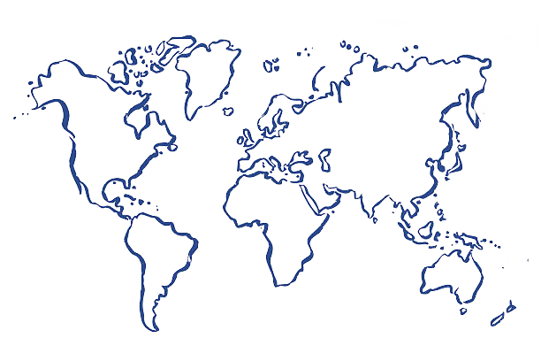
A dónde iremos ahora?
Dicen que un abrazo te reconstruye,
pero contigo va más allá:
Porque cuando lo haces no solo sanas,
también me llevas
a un universo en completa calma.
Me llevas a un sitio donde me siento en paz,
haces que de a poco mi corazón
vaya recobrando la fuerza.
Porque un solo abrazo cálido es suficiente
para lograr que quiera quedarme...
Hoy,
mañana
y siempre.
Te quiero para que seas
la persona de mi vida.
Pero también te quiero
para que seas la vida
en forma de persona.
Bésame, bésame como aquella noche,
cuando la luz de la luna
estaba translúcida por la ventana
trasera del vehículo.
Cuando gritaban
que me amabas,
incluso cuando tus
labios permanecían cerrados.
Quiero volver a
sentir ese día,
cuando nuestras manos
se volvían una sola.
Y nuestros pies
envejecían por el
dulce roce de
agua salada.
Quiero volver a
sentir tu amor
en el abrazo
de despedida.
Y bien te podría esperar,
en la cama o en el sofá,
en la melancolía y en la risa,
en el cuarto o en el encanto.
Tal vez la vida viuda nos separe a todos,
o el sol radiante le haga el amor a la luna
y una pequeña parte del océano
se llene de oxígeno.
Mientras el sol se esfume con un tono rojizo,
las nubes invadan el cielo por completo
y las aves canten al amanecer,
nuestro beso será eterno.
Eterno como los Dioses,
como el universo y el tiempo.
O tal vez no.
Estoy aquí, sintiendo todo
y a la vez, todo se va a la chingada.
Te juro que estoy luchando
por sacar esto adelante,
pero sinceramente, ya no sé
si sea lo correcto para nuestra salud mental.
Lo estoy dando todo,
aun así buscas una manera
de hacerme sentir que todo este esfuerzo
se va a la mierda.
Te amo, te amo más que
todo lo que he conocido o
lo que he sentido por alguna
persona en mi vida.
Pero en este momento,
aquí y ahora, después de años,
me siento con nada en la vida.
Ya no sé si valemos la pena,
no sé si vales que llore cada semana,
no sé si pueda soportar más este
vacío en mi pecho.
Te amo, pero no se
si te amo lo suficiente
para soportar más este dolor.
Que solo soy nada
y solos, soy todo.
Te amo y me amas,
amor tradicional.
Conocí una sensación totalmente única,
una que me devuelve a la vida
y se lleva la tristeza,
que me enamora con sus manos.
Ella es mi banda favorita,
mi sol en su esplendor
y laguna en el desierto.
Que la amo, joder que si la amo,
con su caminar pasmado
y su cara de enfado.
Que solo soy nada
y solos, somos todo.
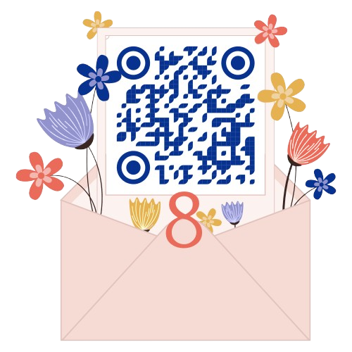
Coloca la fecha y..
Observa, esta luna fue testigo de nuestro primer mensaje,
de la primera vez en que te descubri
la emocion que tuve y todo comenzo a tener sentido
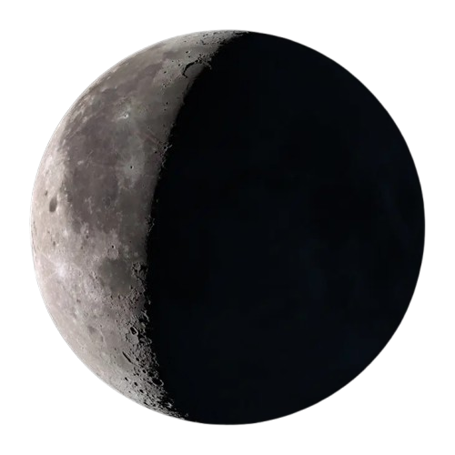
26/03/2022
Bajo esta luna fue nuestro primer encuentro,
la chispa que encendió mi corazón de nuevo,
una emoción tan viva que, de repente, todo cobró sentido.
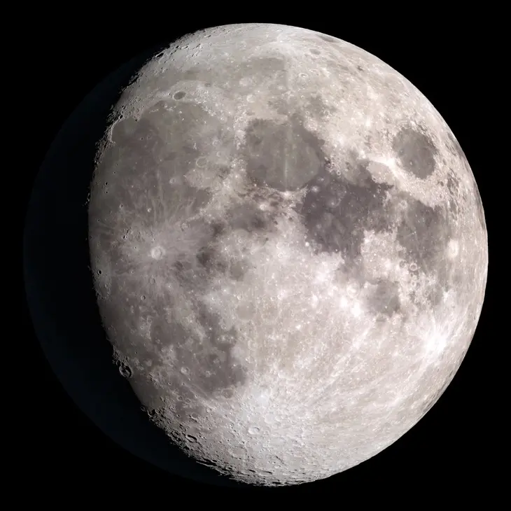
23/11/2023
Llegué a pensar
que lo más bonito de una velada
era ver a la luna brillar...
Hasta que te conocí
y me di cuenta
que "tú brillabas más"
sin importar que la noche
estuviera nublada.
Ojalá seamos nosotros
y no solo hoy,
no solo mañana,
no solo en unos años...
Ojalá seamos nosotros
hasta el último suspiro
y encontrarte en el camino
que hay más allá de esta vida.
Hay sitios donde las historias
se quedan escritas.
Hay momentos
que no quieres que terminen.
Hay paseos tan sencillos
que te curan
cuando el día estuvo mal.
Hay lugares que son especiales
porque tú eres mi compañía.
Te prometo siempre estar
Aunque todo luzca mal
Por ti, más que por mi
Y prometo serte fiel
Por toda una eternidad
Hasta envejecer
Pero necesito
Que tu también prometas
Aún teniendo muchas canas
Tú jamás me dejarás
Aunque no recuerde nada
A mi lado estarás
Porque el tiempo está corriendo
Y yo solo envejezco
Pero si algo a mi me falta
Que sea todo menos tú
Porque si de amar se trata
Hasta amo tu shampoo
¿Te gusta?
Ahora puedes escucharla. Es para ti:
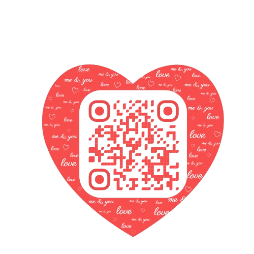
El otoño tambien trae algo de especial:
Lo puedo ver en tus cachetes rojitos
y el reflejo del rojizo cielo en tus ojitos.
Creí que nunca nadie
entendería este sentimiento
o que a nadie le contaría
los secretos que llevo dentro.
Me aterraba cerrar los ojos
y ver el oscuro pasado que arrastraba.
Pero una noche cualquiera,
bajo las estrellas
y con un silencio profundo:
Tomaste mi mano
y dejé de temerle a la oscuridad.
Ven, con todo
y tus quejas,
con todo y tus penas.
Ven, con esa
vista tierna y radiante,
con esos ojos que
sospecho llevan la galaxia entera.
Ven, que te invito
al otro lado del mundo,
para tomarnos un café
o de las manos.
Ven, a sentarnos en
silencio o hablar
por horas.
Ven ahora,
que mi alma tiene
abierta la puerta
y mi pecho, taquicardia.
Ven, para besarnos
bajo la lluvia,
o bajo el marco de
tu puerta trasera.
¿Qué estas sientiendo?
Quizá no sean mariposas
y tal vez son las ganas inmensas
de un sentimiento que vas generando
por descubrir lo que significa...
Hay un efecto tan grande en mí
cuando escucho tu voz....
Es como si descrubriera
una cancion maravillosa
y sin importar cuando
o dónde suene,
Siempre es perfecta❤
Tú siendo luna
y yo siendo sol.
No importa qué tan lejos estemos
o si la vida algún día
llega a separarnos.
En algún punto,
el eclipse ocurre
y nos volveremos a encontrar.
Tu espalda es el mejor sitio
para descubrir nuevas estrellas.
Acaricio tus lunares
y con besos
voy uniendo cada una,
hasta formar constelaciones.
Me apetece quererte bonito,
de una manera
que se olvidó durante el tiempo.
Déjame escribirte cartas de amor,
dedicarte las más lindas melodías,
cantarte al oído,
aunque no sea el mejor.
Llevarte a tu casa
después de una cita en el parque,
pedirles permiso a tus padres
para traerte a cenar
a tu restaurante favorito.
Déjame quererte así,
sin medidas ni pretextos.
Déjame quererte así...
A la antigua.
Luchemos por nosotros,
por nuestros sueños,
por cada meta
que tenemos por cumplir.
Hay que esforzarnos
para lograr hacerlas realidad,
para no caer en las falsas ilusiones.
Luchemos por los momentos
que viviremos,
por nosotros,
por aquellos instantes
que nos harán inmortales.
____________________________________________
____________________________________________
____________________________________________
____________________________________________
____________________________________________
____________________________________________
____________________________________________
____________________________________________
Prometo enviarte cada mañana
un mensaje de buenos días,
que sea tu chat
lo primero que vea al despertar.
Te prometo contar todo
lo que en mi jornada pase,
si estuvo mal
o fue una de las mejores.
Te prometo que aun en la distancia
te llevaré a todas partes...
entre llamadas y mensajes.
Solo déjame quererte...
Y yo me encargaré
de cada noche recordarte
que eres lo mejor que me ha pasado,
para que nunca olvides que,
a pesar del tiempo,
mi amor por ti seguirá vigente.
Imagina un futuro juntos donde:
Te despierte con el desayuno en la cama
y por la tarde formando equipo
para preparar nuestro platillo favorito.
Imagina llegar cansados
hasta que la noche aparezca
y juntos caminar de la mano
hasta el puesto de la esquina
para una cena llena de momentos buenos.
Imagina una vida
donde seas mi compañía
en cada comida del día.
Llegué a pensar
que la conjugación más hermosa
era ver a los planetas alinearse.
Pero enfrente de todos estabas tú,
con una infinidad
de secretos por descubrir
y me di cuenta
que tú eras más que Júpiter o Saturno,
ibas más allá que Urano y Neptuno.
No podía catalogarte
un planeta o una estrella.
Tú eres una galaxia,
mi universo entero.
El invierno se acerca
y pretendo llevarte de la mano
por las heladas mañanas,
quitarte el frío con mi compañía.
Servirte el café para
disfrutar de tu pan favorito
y quedarme hasta que tu corazón
esté calientito.
Déjame cuidarte y protegerte,
en este invierno
donde los besos sean la cura
y los abrazos el alivio
para cada madrugada fría.
También voy a quererte en esos días
cuando no quieras ver a nadie,
cuando cambies la rutina
por una noche llorando en la cama
abrazando a tu almohada.
También voy a quererte
cuando te encierres en tu propia mente
y busques desaparecer de todo.
Porque en esos días malos
quiero acompañarte
incluso si no me quieres a tu lado.
Porque,
así como te quiero cuando todo es calma,
también voy a quererte
cuando el desastre llegue
y la lluvia en tus ojos no pare.
Te quiero en cada rincón del universo,
en lugares que jamás serán descubiertos.
Te quiero aquí
y en Venecia.
Te quiero en el mar
y en la cima de una montaña.
Te quiero en el campo y en una noche estrellada.
Te quiero en cualquier sitio, en todas partes...
En todo el mundo:
Te quiero.
Una casita en el campo,
fin de semana con los amigos
y la vida que siempre deseamos.
Días cansados,
pero noches en la cama abrazados.
Cumpliendo nuestros sueños
y formando esa familia
que los dos buscamos.
Un futuro a tu lado...
donde solo exista querernos.
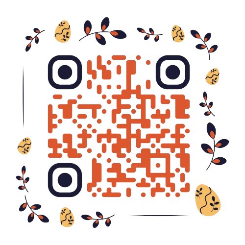
A partir de aquí, encontrarás frases llenas de amor, esperanza y apoyo, dirigidas a ti.
Sé que estás pasando por un momento difícil,
y aunque ahora todo parezca complicado,
quiero recordarte lo fuerte que eres.
Puede que ahora mismo te cueste verlo,
pero las dificultades que enfrentas no son permanentes.
Aunque el camino parezca oscuro,
siempre hay una luz al final del túnel,
y con cada día que pasa,
te acercas un poco más a ella.
Esa luz está dentro de ti,
y sé que, aunque parezca difícil,
encontrarás la manera de volver a brillar.
No necesitas apresurarte;
cada persona tiene su propio ritmo para sanar.
Si hoy te sientes agotada y sin fuerzas,
recuerda que eso no significa que estés derrotada.
Este es solo un capítulo más en tu historia,
y un día mirarás atrás con orgullo,
sabiendo lo mucho que has crecido
y lo fuerte que te has vuelto.
Así que sigue adelante,
aunque los pasos sean pequeños;
lo importante es que sigues avanzando.
Espero que estas frases te ayuden,
aunque sea un poco, a ver que esto también pasará.
Tienes un futuro lleno de luz
y posibilidades por delante.
Cuídate mucho y, sobre todo,
no olvides que hay personas
que te apoyan y creen en ti,
incluso en los momentos
en los que tú misma no lo hagas.
¿ESTÁS LISTA?
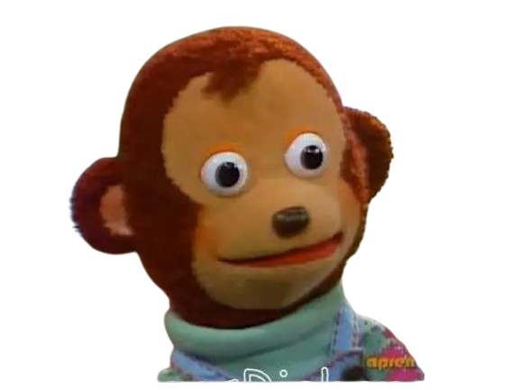
Aunque hoy el dolor te parezca abrumador,
recuerda que no define quién eres.
Eres mucho más fuerte de lo que crees,
y cada día que enfrentas es
una prueba de esa fortaleza.
La tormenta que atraviesas no será eterna.
Puede parecer interminable,
pero con cada pequeño paso que des,
estarás un poco más cerca
de días llenos de luz y esperanza.
No te castigues por sentirte mal.
Permítete sentir,
pero nunca pierdas de vista
que tus emociones no te controlan.
Eres capaz de sobreponerte
a cualquier adversidad.
El simple hecho de que estés aquí,
enfrentando otro día,
es una prueba de tu fuerza.
Estás superando más de lo que crees,
y eso ya es motivo de orgullo.
El dolor te está transformando
en alguien más fuerte y sabio.
Aunque ahora sea difícil verlo,
un día mirarás atrás y verás que
todo esto tuvo un propósito.
No te castigues por sentir dolor.
La tristeza también es parte de la vida,
pero no te defines por los momentos difíciles.
Hay más en ti que lo
que estás atravesando ahora.
Las tormentas no son eternas.
Aunque ahora sientas que te has perdido,
el sol volverá a brillar.
Solo necesitas seguir moviéndote
hacia adelante,
incluso cuando no veas el horizonte.
Cada cicatriz,
visible o no,
es un recordatorio de
que sobreviviste.
No importa cuán profunda sea la herida,
tú tienes la capacidad de sanar
y ser más fuerte que antes.
El camino puede parecer incierto,
pero ten fe en que los pasos que das,
por más pequeños que sean,
te están llevando hacia un lugar mejor.
Aunque ahora estés en el centro de la tormenta,
recuerda que siempre hay calma
después de la tempestad.
Sigue luchando,
porque esa calma también llegará a ti.
La vida puede ser desafiante,
pero recuerda que incluso las flores
más hermosas necesitan tiempo y cuidado para crecer.
Tu transformación está en camino.
La vida es un viaje lleno de altibajos.
No dejes que los momentos
difíciles te definan.
Recuerda que eres más que tus luchas;
eres un ser lleno de potencial y luz,
capaz de superar cualquier adversidad.
En medio de la confusión y la tristeza,
busca pequeños momentos de felicidad.
Puede ser algo tan simple
como una taza de café caliente
o un paseo al aire libre.
Estas pequeñas cosas
pueden ser la chispa que ilumine tu día.
Cuando los días se sientan
largos y agotadores,
recuerda que la vida
es una mezcla de colores,
y a veces solo necesitamos
ver un poco más allá
para descubrir los tonos
brillantes que nos rodean.
La alegría
siempre está al alcance de tu mano.
Las experiencias difíciles
pueden ser abrumadoras,
pero son en esos momentos
donde a menudo
encontramos la mayor claridad.
A veces, el dolor
nos impulsa a reevaluar
nuestras prioridades
y descubrir lo que realmente importa.
La vida está llena de sorpresas,
y aunque ahora te sientas atrapada
en un túnel oscuro,
ten la fe de que pronto
encontrarás la luz al final.
La esperanza y la alegría
están en tu camino,
solo necesitas seguir adelante.
La vida es como
una montaña rusa,
con sus altibajos,
pero es precisamente
esa mezcla de emociones
la que la hace emocionante.
Sin importar en qué parte del viaje
te encuentres,
siempre habrá un nuevo giro
lleno de emoción y alegría.
A veces, lo único que necesitamos
es un cambio de enfoque.
Si decides centrarte en lo positivo,
verás que el mundo está
lleno de cosas hermosas
esperando a ser descubiertas.
¡Hay tanta belleza a tu alrededor
que espera por ti!
Espero que estas frases te hayan inspirado y te brinden la fuerza que necesitas para seguir adelante.
Recuerda que siempre hay luz al final del túnel y que cada día es una nueva oportunidad para renacer y encontrar la alegría en las pequeñas cosas.
Cuida de ti y nunca olvides que estoy aquí para apoyarte en cada paso del camino.
A veces, lo único que necesitamos es un cambio de enfoque. Si decides centrarte en lo positivo, verás que el mundo está lleno de cosas hermosas esperando a ser descubiertas.
¡Hay tanta belleza a tu alrededor que espera por ti!
Ahora, este es un mensaje mío para ti: cuida de ti misma y nunca olvides que estoy aquí para apoyarte en cada paso del camino.
"Antes de pasar a la siguiente pagina
escanea este qr y escucha la canción mientras vas leyendo."
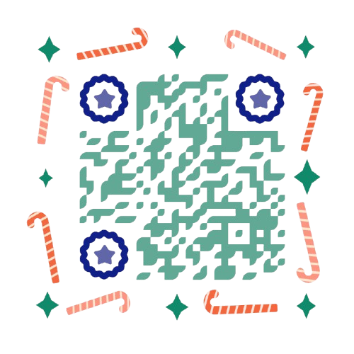
Todo comenzó con un simple 'hola', algo tan pequeño y casual, pero que en ese momento no supe que cambiaría mi vida para siempre.
Te conocí a través de una amiga, un encuentro que parecía cotidiano, sin grandes expectativas, pero que poco a poco fue construyendo uno de los capítulos más importantes de mi historia.
Jamás imaginé que esa pequeña conversación marcaría el inicio de una relación tan significativa, ni que llegaría a sentir tanto por ti.
Pero la vida tiene formas misteriosas de sorprendernos, y así, de manera casi inadvertida, te fuiste convirtiendo en alguien indispensable para mí.
Han pasado tres años desde ese primer saludo, tres años llenos de momentos que guardo en mi memoria con cariño. A lo largo de este tiempo, hemos compartido risas, abrazos, alegrías, y sí, también momentos difíciles.
Enfrentamos obstáculos que, en su momento, nos parecieron insuperables, y aunque a veces nos tambaleamos, siempre seguimos adelante.
Ahora, al mirar atrás, me doy cuenta de cuánto aprendimos el uno del otro y de cómo todo lo que vivimos me hizo crecer de una manera que nunca habría imaginado.
A veces, me sorprendo pensando en cómo sería si pudiéramos regresar al día en que nos conocimos.
Me gustaría poder revivir esos primeros momentos con la perspectiva que tengo ahora, apreciar cada detalle con más intensidad, sabiendo lo que vendría después.
Pero el tiempo no vuelve, y aunque nuestra relación haya llegado a su fin, no cambiaría nada de lo que compartimos.
No me arrepiento de un solo instante, porque todo lo que vivimos me llevó a amarte profundamente, más de lo que alguna vez creí posible.
Ahora que nuestras vidas han tomado caminos distintos, me invade una mezcla de emociones. Por un lado, siento la tristeza natural de saber que lo nuestro terminó, que ya no compartimos el mismo camino.
Pero por otro, siento una profunda gratitud por todo lo que significaste para mí.
A lo largo de estos años, no solo fuiste mi pareja, sino también mi compañero de vida, mi confidente, mi apoyo incondicional.
Y aunque ya no estemos juntos, siempre llevaré en mí esos recuerdos y las lecciones que aprendí a tu lado.
Siempre recordaré tu sonrisa, esa que me cautivó desde el primer día y que, hasta hoy, sigue teniendo un lugar especial en mi corazón.
Esa luz que desprendías y que iluminaba incluso los días más oscuros.
Sé que la vida sigue, que ambos continuaremos adelante, encontrando nuevos caminos y nuevas personas con quienes compartir nuestras vidas.
Habrá nuevas relaciones, y aunque el tiempo nos lleve por direcciones diferentes, lo que compartimos siempre quedará como una huella imborrable en mi vida.
A veces me pregunto qué nos deparará el futuro.
Tal vez nuestras historias se crucen de nuevo, o tal vez no, pero lo que sí sé es que siempre te desearé lo mejor, porque fuiste una parte importante de mi vida. Nada de lo que vivimos fue en vano, y aunque hoy nos despidamos, no hay amargura en mis palabras, solo gratitud y cariño por todo lo que fuimos.
Hoy, mientras escribo esto, sé que esta despedida es definitiva en términos de lo que fuimos como pareja. Sin embargo, no es un adiós en el sentido más triste, porque te llevaré siempre conmigo, en mis recuerdos y en el corazón.
Lo nuestro fue real, fue especial, y no importa cuántos años pasen o cuántas cosas cambien, esa verdad no se desvanecerá.
Adiós, pero no en el sentido de olvido.
Te despido con el mismo cariño con el que te conocí, con el respeto que siempre te he tenido y con la esperanza de que encuentres felicidad en cada paso que des a partir de ahora.
Aunque nuestras vidas ya no estén entrelazadas, siempre serás una parte fundamental de la persona que soy hoy.
Gracias por cada risa, por cada lágrima, por cada momento en el que compartimos lo mejor de nosotros.
Me quedo con los recuerdos, y aunque nos separemos, siempre llevaré en mí una parte de ti.
Te deseo lo mejor, con todo mi corazón, y siempre estaré agradecido por haberte conocido, por haber tenido la oportunidad de compartir mi vida contigo, y por todo lo que me diste en estos años que siempre recordaré con nostalgia y cariño.
GRACIAS POR TODO ESPOSA MIA ❤
"Siempre amaré esa bella sonrisa
que me enamoró desde el primer instante.
Es el reflejo de todos los momentos felices
que compartimos y la razón por la que mi corazón
siempre te llevará presente.
Aunque el tiempo pase,
ese brillo en tu rostro seguirá
siendo mi recuerdo más querido.
Espero que este pequeño "libro" te haya gustado.
Lo escribí pensando en ti,
con la intención de sacarte una sonrisa
y regalarte algo que salga un poco de lo habitual.
Ojalá, al leerlo,
hayas sentido el cariño
y la dedicación que puse en cada palabra.
Si logró hacerte sonreír,
entonces todo valió la pena.
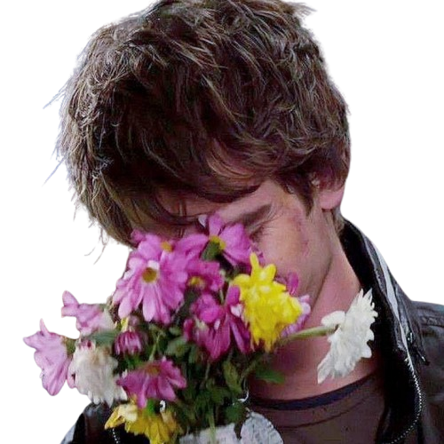